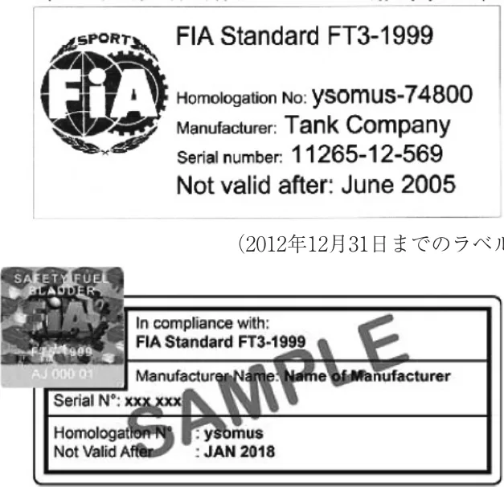
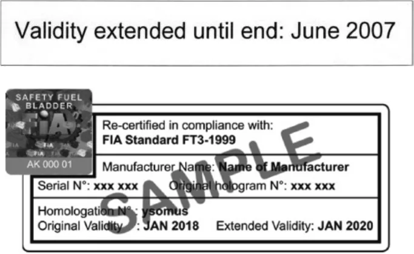

JAF / FIA公認の安全燃料タンク_2027
JAF の公式サイトではありません。JAF が公開する PDF を自動変換した非公式の検索用アーカイブです。記載内容は必ず JAF の原本 PDF で出典をご確認ください。 検索と AI 質問つきのビューアで開く
P.1ＪＡＦ／ＦＩＡ公認の安全燃料タンク
参加者は安全燃料タンクを使用するときには、ＪＡＦおよび／またはＦＩＡ公認の製造者によって造られた安全燃料タンクを使用しなければならない。ＪＡＦおよび／またはＦＩＡの公認を得るためには、製造者はその製品が一定の品質を保ちうることと、ＪＡＦおよび／またはＦＩＡによって認められた基準に合致していることを証明しなければならない。ＪＡＦおよび／またはＦＩＡ公認のタンク製造者は、公認基準に合致したタンクのみを顧客に納品することが義務付けられる。
ＪＡＦおよび／またはＦＩＡは、関係製造者によって提出された書類を検討したうえ、技術仕様を承認する権利を留保する。
基準：すべての安全燃料タンクはＦＩＡ基準FT3-1999、FT3.5-1999またはFT5-1999およびＦＩＡ規格8875-2025燃料タンクに合致していなければならない。
これらのタンクの技術仕様書はＦＩＡ事務局に申し込めば入手できる。
安全燃料タンクの耐用年数：
製造後、５年を経過した安全燃料タンクを使用することは禁止される。ただし、製造後５年を経過した安全燃料タンクの製造者が検査を行い、再保証した場合については、更に２年間使用することができるが、製造後７年を越えて使用することはできない。また、ラベルに表示されている有効期限を越えて使用してはならない。
ＦＩＡ基準に従い製造された安全燃料タンクに貼付されるラベル例
（2003年6月１日以降製造のタンクに貼付義務付け）

（2012年12月31日までのラベル）
（2013年1月1日以降のラベル）
P.2再保証した場合のラベル例
上記ラベルに近接して（下方が好ましい）貼付される。

（2017年7月1日以降の再公認ラベル）